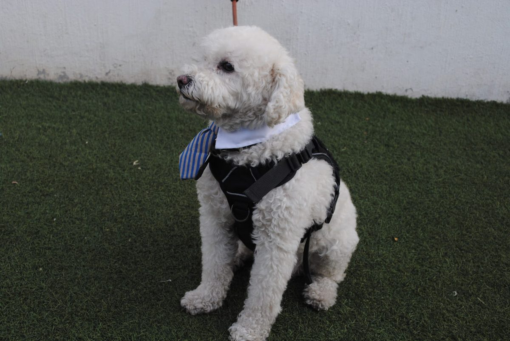

🐾 Identificación digital

🎥 Conoce a Mate
Mira este video corto para reconocerlo mejor.
📷 Más fotos de Mate
Toca una foto para verla más grande.
🐶 Información de Mate
🚨 Cuidado importante
Mate necesita cuidado especial por su riñón. Por favor no le des comida humana. Necesita dieta renal especial y volver pronto con Paola.
🐾 Cómo soy
👩 Contacto
Dueña: Paola de León
Celular / WhatsApp: 3313976529